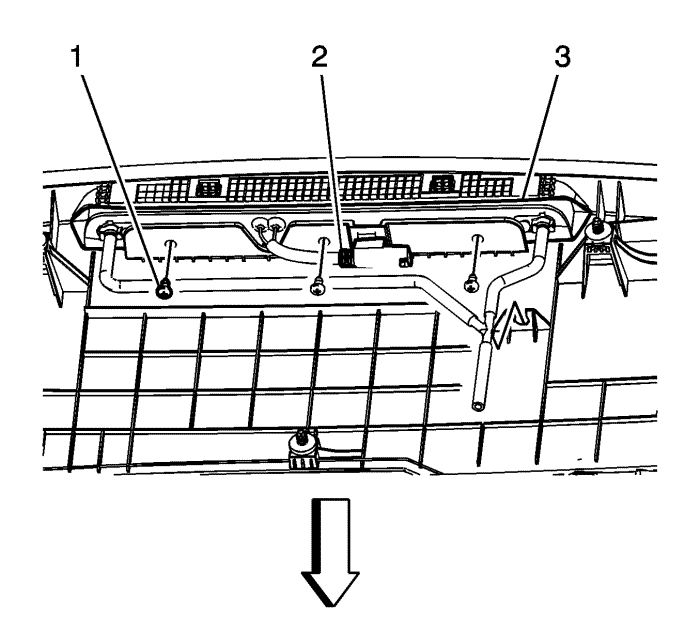
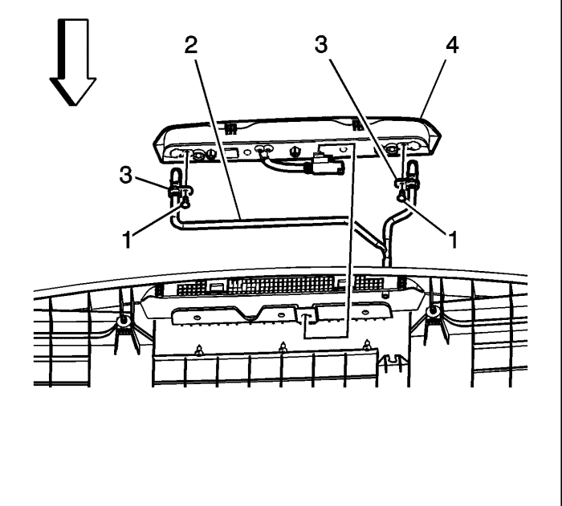

Desmonte la moldura superior del portón trasero. Consultar Sustitución de la moldura superior del portón trasero : Carrocería corta → Carrocería larga .
Dé la vuelta a la moldura superior del portón trasero y colóquela sobre una superficie protegida, limpia y seca.

Retire los tornillos que unen el spoiler a la tercera luz de freno (1).
Desacople el tubo flexible del lavaluneta de la moldura superior del portón trasero.
Desemborne el conector eléctrico (2) del soporte de la moldura superior del portón trasero.
Levante la tercera luz de freno (3) de la moldura superior del portón trasero.

Retire los tornillos del difusor del lavaluneta (1).
Retire los difusores del lavaluneta (3) del conjunto de la tercera luz de freno (4).
Desacople el tubo flexible del lavaluneta trasero de los difusores.
Monte los tornillos del difusor del lavaluneta (1). Apriételos a 2 N·m (18 lib. pulg.).
Coloque la tercera luz de freno (3) en el soporte de la moldura superior del portón trasero.
Monte los tornillos (1) para fijar la tercera luz de freno al soporte de la moldura superior del portón trasero. Apriete los tornillos a 2 N·m (18 lib. pulg.).
Coloque y fije el conector eléctrico de la tercera luz de freno (2).
Fije el tubo flexible del lavaluneta en la moldura superior del portón trasero.
Monte la moldura superior del portón trasero. Consultar Sustitución de la moldura superior del portón trasero : Carrocería corta → Carrocería larga .